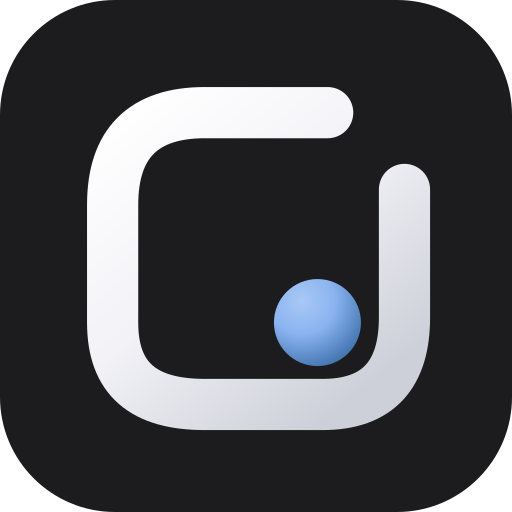

小当时Littlewhen
小当时Littlewhen免费
没有内购，没有订阅
记录、附件、保险箱、搜索、回看、问一问、导入导出、Agent 授权，全部功能都能用。
- 不登录也能完整使用
- 没有广告和统计

小当时是一座属于自己的记忆库，免费、开源。文字、照片、语音、文件，先写进这台设备的加密资料库；想多端同步，就连上你自己的服务器。数据从头到尾都在你手里。
把一条记录放进保险箱，正文、标签、附件、转写都在设备上加密后再同步。服务器保存的是密文；服务器管理员、你授权过的 Agent，都读不到内容。
Mac 按 ⌘J，iPhone 点工具栏的「问一问」。第一屏是今天的回想：那年今日、本周总结、一张洞察卡，再加三个由你记录里常出现的人和事生成的问题。提问后的回答句句带出处，证据不够就直说没找到。
随时把全部记录和附件导出成 ZIP（含 Markdown 与原始附件）或 PDF；也能从 Day One、Journey、Markdown 目录导入。想让 Claude、ChatGPT 这类 Agent 帮你查，就给它一把受限的钥匙。
小当时不运营云服务，也不收集你的任何数据。记录在你的设备上，同步在你的服务器上。
记录、附件、保险箱、搜索、回看、问一问、导入导出、Agent 授权，全部功能都能用。
应用和服务端的代码都公开，可以审计，也可以自己编译。
多端同步、Agent 接入、服务器提供的 AI 模型，都跑在你自己部署的服务器上。
应用免费下载。Mac 与 iPhone 连同一台服务器，就能共用同一个资料库。
服务端是一个二进制或一个容器，家里的 NAS、一台小云主机都能跑。部署好以后，在应用的「设置 › 账号与同步」里填上你的服务器地址，注册或登录即可。
git clone https://github.com/zhchxiao123/littlewhen cd littlewhen RM_BASE_PATH=/littlewhen docker compose up --build -d # 用 Caddy / Nginx 配好 HTTPS，在应用里填写： # https://你的域名/littlewhen
反向代理、备份、AI 模型和 Agent 的配置说明都在源码仓库里。